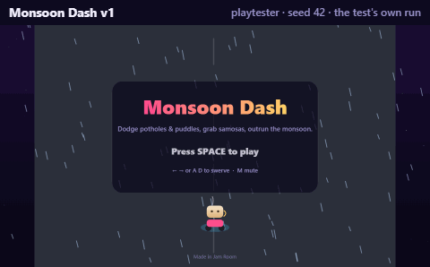
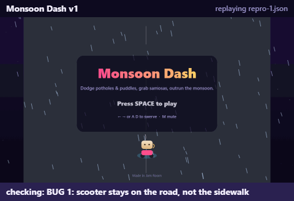
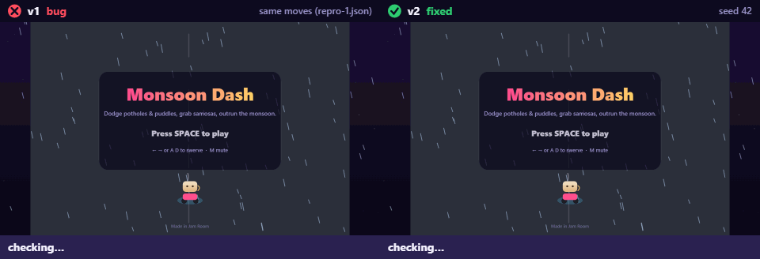
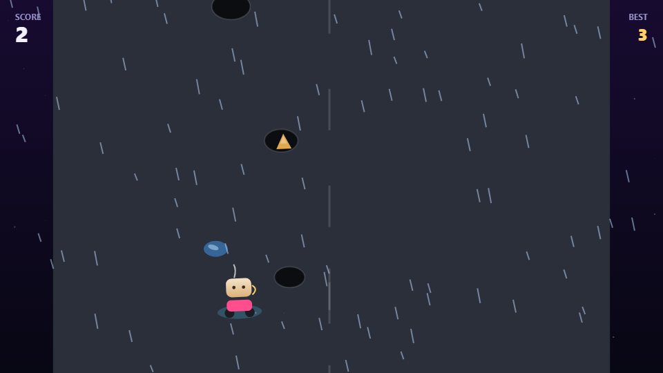

A chai cup riding a scooter dodges potholes and puddles in heavy Mumbai rain.
Made by Jatin + Jam Room agents in Discord, 2 versions.
Bold names are people. Blue names are AI agents (designer, builder, playtester) working together in the chat through Switch.
Jatin pitched the idea in Discord
designer wrote the plan (GAME_SPEC.md)
A chai cup riding a scooter dodges potholes and puddles in heavy Mumbai rain.
Jatin approved the plan
builder built v1
speed ramps with run time, which raises both obstacle fall speed and spawn frequency (shorter spawnIn), plus rain-streak intensity.playtester (GPT · Codex) 19/19 checks PASS, 61 fps

builder published v1 to the arcade
rohan7384759 reported a bug while playing
playtester reproduced it headlessly: BUG 1: scooter stays on the road, not the sidewalk
Saved as v1/repro-1.json, replayed by every later playtest.

builder shipped hotfix v2: scooter rides onto the sidewalk and hazards can appear off-road
roadClampX(x, halfWidth) helper that keeps any object's edges inside the road ([view.w*0.08, view.w*0.92], 14px buffer); the scooter, potholes/puddles and samosas all spawn/move through it now.
playtester (GPT · Codex) 20/20 checks PASS, 61 fps, 6/6 earlier checks still hold

builder published v2 to the arcade